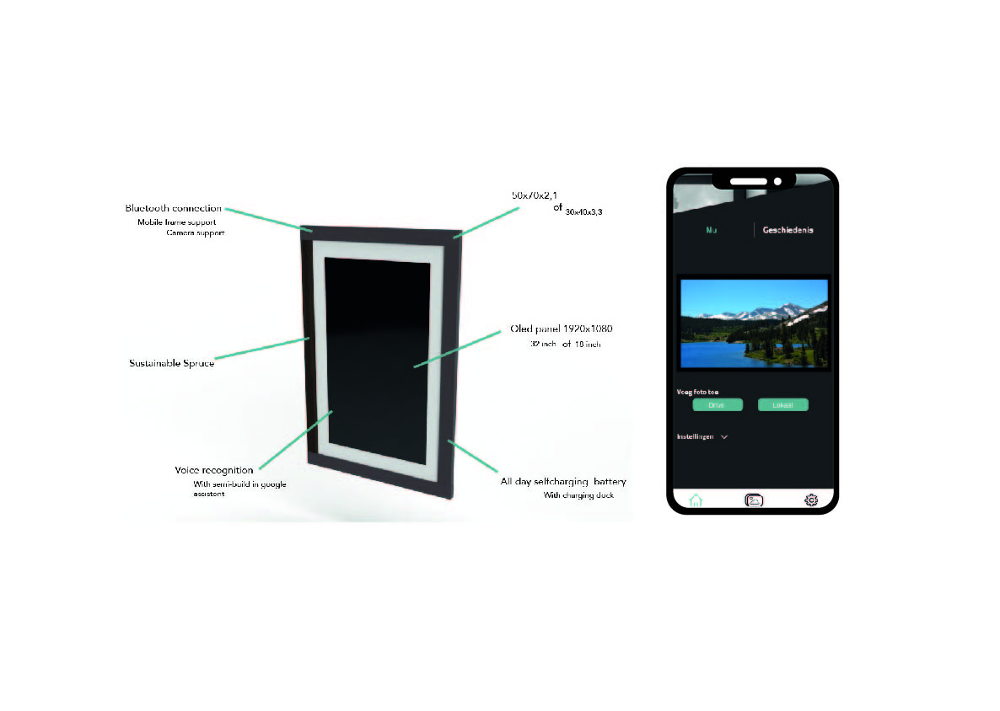

Passie Project
Dit is een project dat ik heb gedaan aan het einde van mijn propedeuse jaar. In het project hadden we de volledige vrijheid om een product te maken heeft met een passie van jezelf. Ik houd van fotografie en wil mijn foto's ook ophangen, maar het kost veel om uit te printen en er kan maar 1 foto in het lijstje. Daarom heb ik een digitale lijst gemaakt, waar je de foto van kan veranderen met een app. Link app: https://xd.adobe.com/view/0fefb684-eae4-4b3d-575c-0f277c239092-79de/
